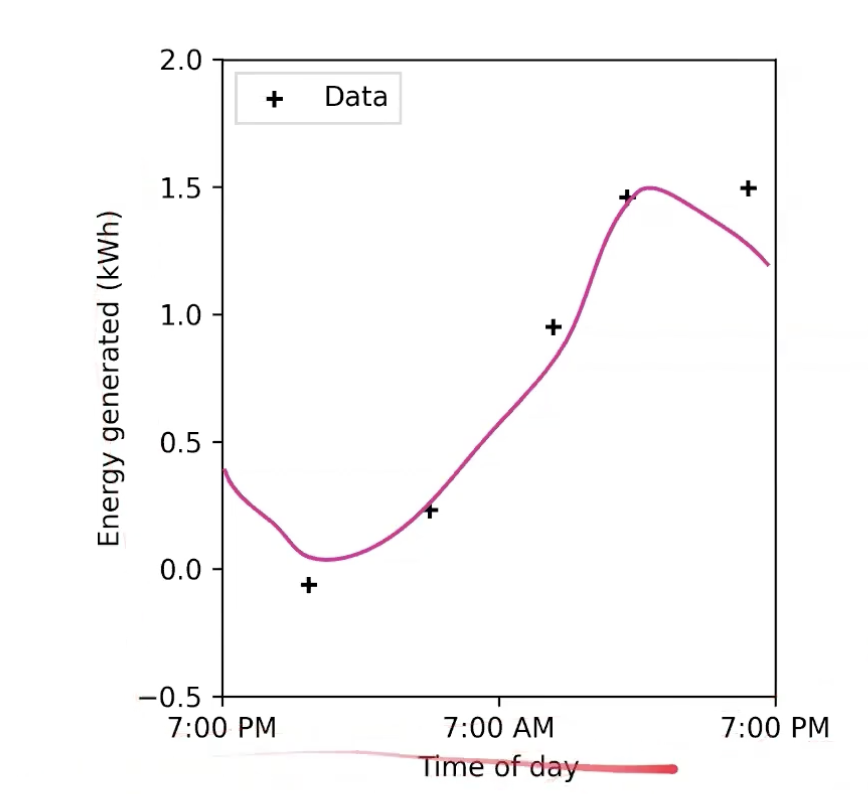
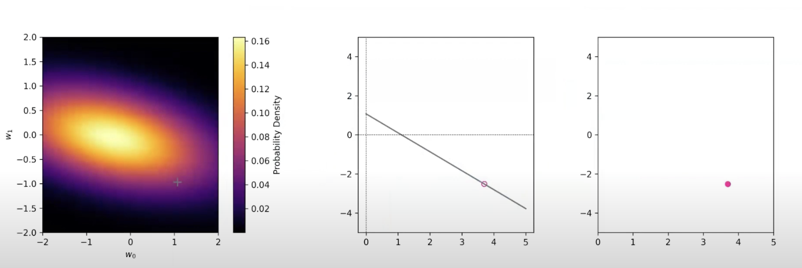

In L09a, we knew what the true underlying function looked like, since we knew the set of non-linear basis functions. We looked at how we could incorporate prior knowledge.
The true underlying function that produces the observed data points (+).
This lecture:
We dont know the model (set of basis functions)
We will find a distribution of possible functions. (ie: a more flexible model, that can capture any underlying function that passes through these points).
Gaussian Process Model
Non-Parametric Model: Learns distributions over functions. Allows us to do regression without assuming a specific set of basis functions.
This shows the gaussian-process model after we’ve trained it. We’re trying to do non-linear regression, but the true underlying model is unknown.
The process learns a mean function
It has uncertainty along the mean, σ2
low near data points
high when no points to go off of.
“Distributions over Functions” — what that means?
Property
A linear combination of gaussian-distributed-variables is itself, gaussian distributed.
⇒ the distribution of the function values for a single point are gaussian
Details
In L09a, instead of finding a single point-estimate of w to define a function, we found a distribution over all possible w.
A) posterior distribution of weights, B) model from a specific weight sample, C) shows the model’s prediction for a specific value of x=3.7After doing this many times.
Each set of weights came from a gaussian distribution. The resulting function values also follow a gaussian distribution.
By repeating this for every x value, we get this plot:
⇒ The joint-distribution between any 2 input points is also Gaussian.
DetailsEach of the function values for a specific x value, follow a G.D. The middle plot shows the joint-prob-density, which comes from multiplying both of them. which is max at the mean value for both inputs.
⇒ The join-distribution between any # input points is also Gaussian (ie: the function values for any set of points follows a multivariate gaussian distribution).
Property
A gaussian processes is completely specified by μ,Σ
⇒ So is the joint-distribution over function values
Deriving μ,Σ — For the Linear Model of N.L.B.F’s
Based on our assumptions, the covariance matrix completely specifies the joint distribution, and it can be computed through the kernel.
C = The sum of covariances of the 2 sources of randomness. Thus, our uncertainty in t is from:
The underlying function uncertainty, and
The noise in our observations
Predict the Function for a Test Point
The joint-distribution of observed training points allows us to describe how known points are related to each-other.
Our goal is to predict the function at a new, unseen test point.
Extending the gaussian process to make predictions:
If the gaussian-distribution holds for N training points, it should also hold for N+1.
Augment C (“absorb” the test point into the model).
Predictive Distribution
All you have to know is these expression for mean and variance.
For a new test point, all you have to do is directly compute the mean & variance.
To compute the function value at any new point, tn+1
Augment C
Compute the mean and variance of the predictive distribution at the test point using CN+1
Note — The Kernel Function
The kernel function defines similarity (ie: it defines the properties covariance matrix K, which controls how function values are related to each other).
For points that are similar, the function values will be strongly correlated.
How we define “similar” depends on our choice of kernel function.
The kernel does not need to be gaussian, BUT it must be a mercer kernel (positive semidefinite) to ensure K is
a) Gaussian kernel, b) exponential kernel
Similarity between linear regression & gaussian process
When the kernel function is defined in terms of { basis functions }:
Predictive distributions of gaussian process & linear regression are equal.
linear regression — works from the parameter space perspective w’
gaussian process — works from the function space perspective w’ gaussian process.
However the computation cost is different.
What to know
Apply Bayesian updating to determine the posterior distribution of parameters,from the likelihood and a given prior.
Design suitable priors to reflect domain knowledge and serve as a form of regularization.
Use MAP to incorporate priors on the weights in regression in a data-scarce applications involving domain knowledge.
Interpret ridge regression as a imposing a prior on the distribution of weights.
Given the expression for the mean and covariance of the predictive distribution, and a particular kernel function, compute and/or sketch the prediction of the GP solution for a test input.
Select and defend the choice of using either Gaussian Process regression or Bayesian Linear Regression, taking into account the tradeoff between computational complexity and flexibility of the model.
{kind=link}


{kind=link}


{kind=link}